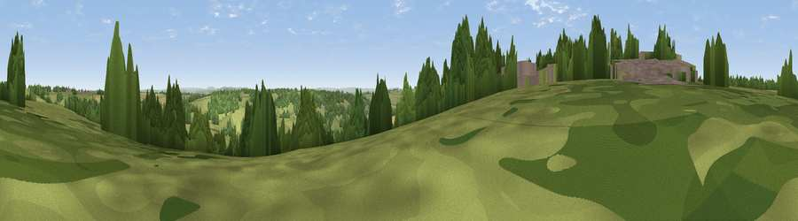

Viewpoint near Colerne
#29375 in England · top 50% of its area beats it · near ColerneThe view, rendered

A 360° render of this exact spot computed from the terrain model, tree cover and land cover — summer colours, afternoon light, calibrated against photographs of famous viewpoints. Real trees, hedges and buildings will differ in detail.
The panorama
Grey silhouette: terrain skyline in each direction (720 bearings, Earth curvature and refraction included). Dashed green: skyline with trees (+15 m) and buildings (+8 m) as obstacles. Blue strip: how far the ground is visible on each bearing.
Where the view opens
Wedge length = distance to the farthest visible ground on that bearing (vegetation-aware). Rings at 10, 25 and 50 km.
What fills the view
59% grassland · 25% woodland · 14% cropland · 1% built-up
Angular shares of the visible panorama (visual magnitude), not map area. Landscape diversity 0.43 (0–1 Shannon).
Key numbers
More beautiful places nearby
The staircase of upgrades: each row has a higher view potential than everything closer. Driving times are estimates from straight-line distance, calibrated against real road routing — check an actual route before setting out.
| Place | Direction | Drive | Score |
|---|---|---|---|
| Viewpoint near Colerne | WSW · 1 km | ~4 min | 45.5 |
| Viewpoint near Ashley | SW · 3 km | ~7 min | 52.7 |
| Viewpoint near Monkton Farleigh | SSW · 5 km | ~10 min | 54.1 |
| Viewpoint near Bathford | SSW · 6 km | ~12 min | 64.0 |
| Viewpoint near Hinton | NW · 10 km | ~19 min | 65.9 |
| Hanging Hill | W · 11 km | ~21 min | 76.4 |
| Cley Hill | S · 26 km | ~42 min | 76.8 |
| Viewpoint near Stinchcombe | NNW · 28 km | ~45 min | 80.5 |
51.43974, -2.25640 · source: screening · position refined by local search. Computed location — check access rights before visiting.